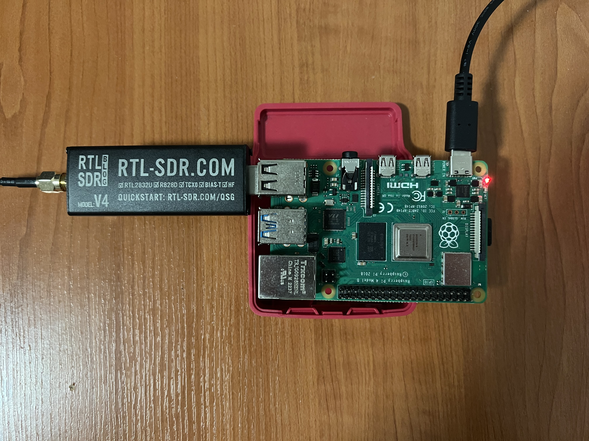
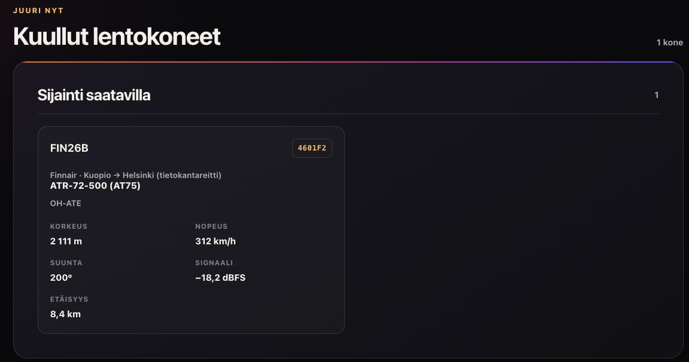

SkyScope
SkyScope on projekti, jossa antennin avulla pystyn kuulemaan kotini yllä lentäviä lentokoneita. SkyScope oli toiminnassa noin kuukauden ja tavoitti yli 100 lentokonetta.
Lyhyesti · noin 3 min
SkyScope lyhyesti
Mikä SkyScope on?
SkyScope on oma sivuni, jolla näkyvät kotona olevan lentokonevastaanottimeni havainnot. Se näyttää, mitä koneita vastaanotin kuulee tällä hetkellä ja mitä koneita se on kuullut päivän aikana. En seuraa tällä kaikkia maailman lentoja, vaan ainoastaan niitä, joiden signaali ulottuu omaan vastaanottimeeni.
Lentokoneet lähettävät radiosignaaleja, joista voi saada esimerkiksi tunnuksen, korkeuden ja nopeuden. Kaikista koneista ei saada samoja tietoja. Jos sijainti puuttuu, SkyScope näyttää koneen erikseen ilman sijaintia sen sijaan, että se arvaisi missä kone on.
Minusta kiinnostavinta on se, että luvut tulevat omasta laitteesta. Näen samalla, miten päivän tilanne muuttuu: joskus vastaanotin kuulee monta konetta, joskus ei yhtään. Tyhjä lista ei siis tarkoita, ettei ilmassa olisi koneita. Se kertoo vain, ettei oma laitteeni kuule niitä juuri sillä hetkellä.
Mistä tiedot tulevat?
Antenni ja vastaanotin ovat kotonani. Raspberry Pi lukee niiden avulla lentokoneiden lähettämiä ADS-B-viestejä. Pi kokoaa tämänhetkiset koneet ja paikalliseen tietokantaan tallennetut havainnot. Niistä se laskee esimerkiksi päivän ohitukset ja lähimmän havainnon. Yhteenveto lähetetään pilvipalveluun noin 30 sekunnin välein, ja verkkosivu hakee sieltä uusimmat tiedot.

Avaa suurempana ↗Vastaanottimen tarkkaa sijaintia ei näytetä sivulla eikä lähetetä pilvipalveluun. Pi laskee etäisyydet jo kotona. Siksi sivulla voi näkyä koneen etäisyys ilman, että antennin paikkaa tarvitsee julkaista.
Sivusto ei tarvitse suoraa yhteyttä kotiini. Selain kysyy tiedot pilvipalvelusta, jonne Pi on jo lähettänyt ne. Tämä tekee sivusta yksinkertaisen käyttää: avaan vain SkyScopen ja katson tuoreimmat havainnot.
Mitä sivulla voi katsoa?
SkyScopessa näkyy ensin, onko vastaanotin yhteydessä. Sen jälkeen näen päivän yksilöllisten koneiden määrän, ohitusten määrän ja lähimmän havainnon. Alempana on lista juuri nyt kuulluista koneista sekä päivän ohituksista. Koneesta voi näkyä esimerkiksi kutsutunnus, konetyyppi, korkeus, nopeus ja etäisyys, jos tieto on saatavilla.

Avaa suurempana ↗Päivän ohitukset näkyvät omana listanaan. Samasta koneesta voi kertyä päivän aikana useampi ohitus, eikä jokaiselle saada etäisyyttä.
 Avaa suurempana ↗
Avaa suurempana ↗
Joillekin lennoille näkyy myös tietokannasta löytyvä reitti. Se on kutsutunnukseen liitetty taustatieto, ei tämän lennon vahvistettu lentosuunnitelma. Jos reittiä ei löydy, sitä ei keksitä.
Yhteyden tila on tärkeä osa sivua. Jos vastaanottimelta ei tule uusia tietoja, se näkyy käyttäjälle. Näin vanhoja havaintoja ei ole tarkoitus lukea vahingossa tämänhetkiseksi tilanteeksi.
Halusin tehdä sivun, josta omat radiohavainnot voi nähdä helposti. SkyScope kokoaa ne yhteen ja näyttää, miten päivän tilanne muuttuu.
Teknisemmin · noin 15 min
Miten rakensin SkyScopen?
Tässä kerron koko ketjun antennista verkkosivulle. Olen pitänyt selityksen mahdollisimman tavallisena, vaikka mukana on myös teknisiä yksityiskohtia.
Mistä idea lähti?
Kotonani on antenni ja vastaanotin, joilla kuulen lähellä lentävien koneiden radiosignaaleja. Halusin tehdä niistä oman näkymän: en pelkkää teknistä lukulistaa, vaan sivun, josta näkee nopeasti mitä lähitaivaalla tapahtuu. Siitä tuli SkyScope.
Projektin perusajatus on yksinkertainen. Kotona oleva laite vastaanottaa havainnot. Pieni tietokone käsittelee ne. Verkkosivu näyttää tuloksen. Kun sivulla lukee, että kone on nähty tai kuultu, kyse on juuri oman vastaanottimeni havainnosta. Se ei ole yleinen lentoseuranta eikä lupaus siitä, että jokainen alueen kone näkyisi mukana.
Halusin, että sama sivu toimii sekä nopeaan vilkaisuun että tarkempaan tutkimiseen. Siksi siinä on erikseen vastaanottimen tila, päivän luvut ja yksittäiset ohitukset. Päivän tilanne kertoo kokonaisuuden, mutta ohitusriveistä voi tarkistaa, mihin havaintoihin se perustuu.
Pidin varsinaisen SkyScope-näkymän erillään tästä projektiesittelystä. SkyScope-sivulla voi katsoa havaintoja. Tällä sivulla selitän, miten näkymä syntyy ja mitä sen tiedoista voi päätellä.
1. Vastaanotto kotona
Monet lentokoneet lähettävät ADS-B-tietoja radiolla. Viesteissä voi olla esimerkiksi koneen tunnus, sijainti, korkeus, nopeus ja lentosuunta. Antenni vastaanottaa signaalin, ja Raspberry Pi:llä toimiva readsb kokoaa kuullut koneet tämänhetkiseen aircraft.json-tiedostoon.
readsb lukee sen kuulemat viestit.Kuuluminen riippuu signaalista ja siitä, mitä kone lähettää. Siksi havaintoja ei voi tulkita täydelliseksi luetteloksi alueen lentoliikenteestä. Jos koneelta saadaan tunnus mutta ei käyttökelpoista sijaintia, se voi silti näkyä SkyScopessa kohdassa ”Ilman sijaintia”. Silloin sille ei lasketa etäisyyttä.
Jokaisella koneella ei ole sivulla nimeä tai reittiä. Kutsutunnus voi puuttua, ja koneen rekisteri- tai tyyppitiedot riippuvat paikallisen konetietokannan sisällöstä. Jätän puuttuvan tiedon puuttuvaksi sen sijaan, että täyttäisin aukot arvauksilla.
readsb antaa tämänhetkisen tilanteen. Erillinen paikallinen havaintokanta säilyttää ajallisen historian, jota tarvitsen ohitusten muodostamiseen. Näillä on eri tehtävä: tämänhetkinen tiedosto kertoo, mitä kuulen juuri nyt, ja tietokanta kertoo, mitä olen kuullut aiemmin. Jos vain toinen olisi käytössä, sivulta puuttuisi joko live-tilanne tai päivän historia.
SkyScopen lähetysohjelma avaa paikallisen havaintokannan vain lukemista varten. Sen tehtävä ei ole muuttaa alkuperäisiä havaintoja, vaan poimia niistä verkkosivulle sopivat yhteenvedot. Tämänhetkisen tilanteen ohjelma lukee readsb:n JSON-tiedostosta erikseen, koska se sisältää juuri nyt kuultujen koneiden tuoreimmat tiedot.
2. Havaintojen muuttaminen ohituksiksi
Pi:llä on myös paikallinen SQLite-tietokanta, johon on tallennettu havaintoja ajan kanssa. SkyScopen lähetysohjelma lukee siitä viimeaikaiset havainnot. Se ei lähetä koko havaintokantaa verkkosivulle, vaan muodostaa niistä tiiviin yhteenvedon.
Ohitus tarkoittaa tässä usean peräkkäisen havainnon muodostamaa jaksoa samasta koneesta. Ohjelma ryhmittelee havainnot koneen ICAO-tunnuksen ja havaintoajan perusteella. Jos saman koneen havaintojen väli kasvaa yli 15 minuuttiin, seuraava havainto aloittaa uuden ohituksen. Näin yksi pidempi näkyminen ei muutu kymmeniksi erillisiksi riveiksi.
Ohitukselle tallentuvat ensimmäinen ja viimeinen havainto sekä lähin laskettu etäisyys. Jos korkeustietoa on, mukaan tulevat myös jakson pienin ja suurin korkeus. Ohitus saa pysyvän tunnisteen koneen tunnuksesta ja ensimmäisen havainnon ajasta, jotta samaa ohitusta voidaan päivittää ilman että se tallentuu joka lähetyksellä uutena.
Pi laskee lisäksi päivän luvut Suomen ajan mukaan: montako eri konetta on havaittu, montako ohitusta on muodostunut ja mikä havainto on ollut lähimpänä. Nämä ovat oman vastaanottimen lukuja, eivät koko lentoliikenteen tilastoja.
”Eri kone” perustuu koneen ICAO-tunnukseen. Ohitusten määrä voi olla suurempi kuin eri koneiden määrä, koska sama kone voi näkyä useammin kuin kerran päivän aikana. Lähin havainto taas vaatii käyttökelpoisen sijaintitiedon; ilman sitä etäisyyttä ei voi laskea. Nämä erot selittävät, miksi sivun luvut eivät aina ole samat.
Etäisyys lasketaan koneen lähettämän sijainnin ja kotona säilyvän vastaanottimen sijainnin välille. Jos kone ei lähetä sijaintia, ohitukselle voi silti tallentua aika ja tunnus, mutta lähintä etäisyyttä ei näytetä. Samoin korkeusvaihteluväli näkyy vain silloin, kun havaintojen mukana on korkeustietoa. Sivun tyhjät kentät ovat siis osa oikeaa havaintoaineistoa.
3. Tietojen lähetys Pi:ltä
Pi:llä oleva Python-ohjelma kokoaa tämänhetkiset koneet, ohitukset ja päivän tilastot yhdeksi tietopaketiksi. Ajastin käynnistää ohjelman noin 30 sekunnin välein. Yksi ajo tekee yhden lähetyksen, joten taustalla ei tarvitse pitää erillistä jatkuvasti pyörivää Python-prosessia.
Jos koneen sijainti on saatavilla, Pi laskee etäisyyden vastaanottimeen. Laskuun käytetään antennin koordinaatteja vain Pi:llä. Pilveen lähtee laskettu etäisyys ja koneen lähettämä sijainti, mutta ei vastaanottimen tai antennin koordinaatteja. Tämän eron halusin pitää selvänä, koska sivulla näkyvä etäisyys ei vaadi oman sijaintini julkaisemista.
Lähetys kulkee HTTPS-yhteydellä Cloudflare Workerille. Mukana on salainen tunniste, jonka Worker tarkistaa ennen tietojen vastaanottamista. Tunniste on Pi:n ja Workerin asetuksissa; sitä ei laiteta julkiseen verkkosivun JavaScriptiin. Jos lähetys epäonnistuu, ohjelma kirjaa virheen ja seuraava ajastettu ajo yrittää uudelleen.
Lähetettävä paketti sisältää vain rajatun määrän viimeaikaisia ohituksia sekä tämänhetkiset koneet ja päivän tilastot. Vanha paikallinen havaintokanta ei siirry kokonaisena pilveen. Tämä pitää siirron pienenä ja erottaa kotona säilyvän alkuperäisen aineiston julkisen sivun tarvitsemasta yhteenvedosta.
Ohjelma lukee oletuksena enintään viimeisen 48 tunnin havaintoja ohitusten muodostamista varten ja lähettää rajatun määrän uusimpia ohituksia kerrallaan. Päivän luvut se laskee silti kuluvan päivän havainnoista. Näin vanhempaa historiaa ei tarvitse lähettää jokaisella puolen minuutin kierroksella uudestaan. Jos tietoja ei saada luettua tai lähetys epäonnistuu, vanhaa tilannetta ei korvata keksityillä luvuilla.
Yhden havainnon matka
Ajatellaan, että lentokone kuuluu antennille ensimmäistä kertaa. readsb lisää sen tämänhetkisten koneiden joukkoon. Jos viestissä on sijainti, Pi voi laskea etäisyyden. Jos mukana on vain tunnus, kone voi silti näkyä ilman sijaintia. Kumpaakaan tilannetta ei tarvitse täydentää arvauksella.
Kun havaintoja kertyy, paikalliseen tietokantaan tallentunut historia kertoo, milloin kone näkyi ensimmäisen ja viimeisen kerran. Lähetysohjelma yhdistää samasta koneesta lähellä toisiaan tehdyt havainnot yhdeksi ohitukseksi. Jos kone häviää pitkäksi aikaa ja kuuluu myöhemmin uudelleen, uusi jakso voi olla uusi ohitus.
Seuraavalla ajastetulla lähetyksellä Pi vie tuoreen yhteenvedon Workerille. Worker tallentaa sen D1:een. Kun avaan SkyScope-sivun, selain hakee sieltä nykytilan ja päivän historian. Tämä tapahtuu ilman että sivun vierailija pyytää mitään suoraan Pi:ltä. Sama ketju toistuu uusien havaintojen mukana.
4. Mitä pilvipalvelu tekee?
Cloudflare Worker ottaa Pi:n lähettämän tietopaketin vastaan. Ennen tallennusta se tarkistaa tunnisteen, tietojen rakenteen ja kokorajat. Tällä rajataan pois virheelliset tai liian suuret lähetykset. Worker tallentaa tiedot Cloudflaren D1-tietokantaan.
D1:ssä säilyvät vastaanottimen viimeisin tilanne, koneisiin liittyviä saatavilla olevia taustatietoja, päivän tilastot ja yhteenvedot ohituksista. Pi:n kaikkia yksittäisiä raakahavaintoja ei kopioida sinne. Jos sama ohitus tarkentuu myöhemmin, tietokannan riviä päivitetään esimerkiksi myöhemmällä viimeisellä havaintoajalla tai pienemmällä etäisyydellä.
Workerilla on eri tehtävät lähettävälle Pi:lle ja lukevalle selaimelle. Pi käyttää suojattua vastaanottoreittiä. Sivun vierailija saa vain julkiset lukutiedot eikä voi lähettää uusia havaintoja. Kun Pi lähettää uuden paketin, Worker tarkistaa sen ja päivittää D1:n. Selaimen pyyntöihin Worker vastaa jo tallennetusta tilanteesta.
Viimeisin live-tilanne tallennetaan yhtenä vastaanottimen tilana. Ohitukset ja päivittäiset luvut ovat omissa tietokannan tauluissaan, koska niitä halutaan lukea myös myöhemmin saman päivän aikana. Vanha lähetys ei saa syrjäyttää tuoreempaa live-tilannetta. Ohituksissa taas sama pysyvä tunniste auttaa täydentämään olemassa olevaa riviä, kun koneesta saadaan uusi havainto.
Worker tarjoaa verkkosivulle erilliset julkiset lukureitit yhteyden tilaa, tämänhetkisiä koneita, ohituksia ja tilastoja varten. Selain ei ota yhteyttä kotiini tai Raspberry Pi:hin. Se kysyy valmiiksi käsitellyt tiedot Workerilta. Näin oma kotiverkkoni ei tarvitse avointa julkista sivupalvelinta.
5. Mitä verkkosivu näyttää?
SkyScopen näkyvä osa on tavallinen GitHub Pagesissa oleva HTML-, CSS- ja JavaScript-sivu. Selain hakee Workerin tiedot sivun avautuessa ja päivittää ne noin 30 sekunnin välein. Sivulla on vastaanottimen tila, päivän luvut, juuri nyt kuullut koneet ja päivän ohitukset.
Vastaanottimen tila kertoo, onko tuoreita tietoja saapunut. Jos yhteys katkeaa, sivu voi näyttää viimeksi onnistuneesti haetut tiedot ja ilmoittaa, etteivät ne ole enää tuoreita. Näin vanhaa tilannetta ei esitetä huomaamatta tämänhetkisenä.
Konekorteissa näkyy vain saatavilla olevia kenttiä. Korkeus muutetaan sivulla jaloista metreiksi ja nopeus solmuista kilometreiksi tunnissa. Jos sijainti on tiedossa, näytetään myös Pi:llä laskettu etäisyys.
Sivulla on erilliset listat koneille, joiden sijainti on saatavilla, ja koneille, joiden sijaintia ei ole. Päivän ohituksissa yhden rivin voi avata ja sulkea ilman että muu lista katoaa. Avatusta rivistä näkee esimerkiksi havaintojen alku- ja loppuajan, lähimmän hetken sekä korkeuden vaihteluvälin. Ajat näytetään Suomen aikavyöhykkeessä.
Avaa suurempana ↗
Lista ei ole kartta eikä lentoyhtiöiden virallinen aikataulu. Se kertoo, mitä oma vastaanotin on saanut talteen. Sivun luvut vaihtuvat päivän ja kuuluvuuden mukaan.
Selain hakee yhteyden tilan, nykyiset koneet, päivän ohitukset ja tilastot erillisistä rajapinnan osoitteista. Jos ohituksia on enemmän kuin yhdelle sivulle mahtuu, se pyytää seuraavat erät. Tämän ansiosta päivästä voidaan näyttää kaikki tarjolla olevat ohitukset ilman, että yksi vastaus kasvaa tarpeettoman suureksi. Koko käyttöliittymä on tehty tavallisella JavaScriptillä ilman erillistä sovelluskehystä.
6. Mistä mahdollinen reitti tulee?
Osalle kutsutunnuksista näytetään myös reittitieto. Tämä tieto ei tule lentokoneen ADS-B-viestistä. Worker hakee sitä erillisestä kutsutunnusten reittitietokannasta ja säilyttää tuloksen välimuistissa. Haku tehdään taustalla rajatusti, eikä selain tai Pi tee sitä jokaisen sivulatauksen yhteydessä.
Reitti tarkoittaa kutsutunnukseen liitettyä tietokantareittiä. Se voi auttaa hahmottamaan, mihin lentoon tunnus tavallisesti liittyy, mutta se ei todista tämän yksittäisen koneen juuri nyt lentämää reittiä. Se ei ole vahvistettu lentosuunnitelma eikä seurantakartta. SkyScope näyttää tiedon vain silloin, kun se löytyy ja on käyttökelpoinen. Muuten sivulla lukee, ettei reittiä tiedetä.
Taustalla oleva ajastettu haku käsittelee uusia kutsutunnuksia vähitellen. Löydetyt tiedot tallentuvat välimuistiin, jotta samaa tietoa ei tarvitse hakea joka kerta uudelleen. Ohituksen yhteyteen voidaan tallentaa kopio silloin käytetystä reitistä. Näin myöhempi muutos tietokannassa ei muuta vanhaa ohitusta huomaamatta.
Reittien lähteenä on VRS standing-data -aineisto, jota käytetään ADSB.lol-palvelun tarjoamina pieninä kutsutunnuskohtaisina tiedostoina. Worker tarkistaa, että vastaus sopii haettuun kutsutunnukseen ja että lentoasemien tiedot ovat järkevässä muodossa. Jos vastaus ei täytä ehtoja tai tietoa ei löydy, sitä ei näytetä reittinä. Reittihaku ei siis ole yhtä reaaliaikainen kuin antennin oma havainto.
Pidän tämän eron tärkeänä: vastaanottimen oma havainto ja ulkoisen tietokannan taustatieto ovat kaksi eri asiaa. Ne näytetään samalla sivulla, mutta niitä ei pidä sekoittaa toisiinsa.
7. Yksityisyys ja tiedon rajat
SkyScope näyttää oman laitteeni havaitsemaa radiodataa. Vastaanottimen tarkat koordinaatit pysyvät Pi:llä. Pilveen lähetetään vain verkkosivua varten tarvittava yhteenveto sekä lentokoneen oma julkinen sijainti silloin, kun se on saatavilla. Antennin koordinaatteja ei julkaista sivulla.
Tiedon puuttuminen on SkyScopessa normaalia. Osa koneista ei lähetä käyttökelpoista sijaintia, osa ei näy antennille, ja joistakin puuttuvat kutsutunnus tai konetyyppi. Myös reittitietokanta voi olla puutteellinen. Siksi sivu näyttää tuntemattoman tiedon tuntemattomana. Jos paikallinen konetietokanta merkitsee koneen sotilaskoneeksi, merkintä on vain tietokannan luokitus, ei varma tunnistus. Kaikki sotilaskoneet eivät myöskään näy ADS-B:llä.
SkyScope on minulle tapa tehdä oman vastaanottimen havainnoista ymmärrettävä sivu. Sen vahvuus on juuri siinä, että näen mistä luvut tulevat ja mitä ne tarkoittavat.